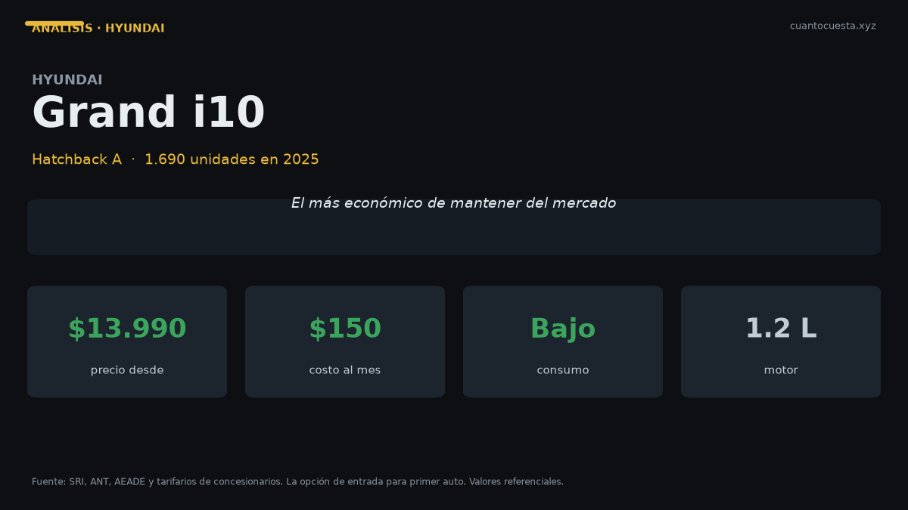

Hyundai Grand i10 en Ecuador: análisis completo, costos y veredicto
Segundo auto de pasajeros más vendido de Ecuador con 1.690 unidades en 2025. Precio desde $13.990, costos anuales y veredicto frente al Kia Soluto.

El Hyundai Grand i10 es el segundo auto de pasajeros más vendido de Ecuador: 1.690 unidades en 2025. Cuesta entre $13.990 y $16.500, y es el auto nuevo más barato que puedes comprar sin salir de las marcas de volumen establecidas.
Solo el Kia Soluto vendió más que él entre los autos de pasajeros (8.725 unidades), y el Soluto cuesta unos $1.800 más en su versión de entrada. La diferencia de precio es el argumento completo del Grand i10.
Si tu objetivo es el costo por kilómetro más bajo posible en auto nuevo, este es el punto de partida del mercado ecuatoriano. No hay muchas alternativas nuevas por debajo de $14.000 con red de posventa nacional.
Ficha técnica
| Dato | Hyundai Grand i10 |
|---|---|
| Segmento | Hatchback A |
| Motor | No especificado públicamente |
| Potencia | No especificado públicamente |
| Torque | No especificado públicamente |
| Transmisión | No especificado (varía por versión) |
| Consumo homologado | No publicado en las fuentes consultadas |
| Dimensiones | No especificadas públicamente |
| Maletero | No especificado |
| Garantía | Confirmar cobertura de la versión en la agencia |
| Precio | $13.990 – $16.500 |
| Unidades vendidas 2025 | 1.690 |
Hyundai no publica las cifras mecánicas del Grand i10 en el material que consultamos. Desconfía de cualquier página que te dé potencia y torque exactos sin citar fuente: en este segmento abundan las fichas copiadas de mercados que no son Ecuador.
Lo que sí puedes verificar en la agencia: cilindrada, potencia, consumo homologado, número de airbags y cobertura de garantía. Son cinco preguntas y cinco respuestas que deben quedar por escrito.
Precio y versiones en Ecuador
| Versión | Precio de referencia |
|---|---|
| Entrada | $13.990 |
| Tope del rango | $16.500 |
Los $2.510 de diferencia entre entrada y tope se pagan en equipamiento, acabados y probablemente en caja automática en las versiones altas. Los precios varían por agencia, ciudad y promoción del mes.
Si el Grand i10 es uno de los pocos autos nuevos disponibles por debajo de $14.000 y vende 1.690 unidades al año, la razón es simple: es el peldaño de entrada a un auto nuevo con garantía y financiamiento, frente a un usado de precio similar con historial incierto.
Cuánto cuesta mantenerlo
Escenario: 12.000 km al año, versión de $16.500, combustible Extra o Ecopaís a $3,26 el galón y una estimación declarada de 15 km/l mixto (Hyundai no publica el consumo homologado).
| Rubro anual | Rango estimado |
|---|---|
| Combustible (estimación 15 km/l) | ~$689 |
| Mantenimiento (aceite, filtros, alineación) | $200 – $400 |
| Matrícula y revisión técnica | ~$150 – $180 |
| Seguro (≈4% del valor) | $560 – $660 |
| Llantas (juego cada ~40.000 km) | $120 – $200 |
| Otros (lavado, imprevistos, multas) | $100 – $200 |
| Total anual | $1.819 – $2.329 |
| Equivalente mensual | $152 – $194 |
Este es el número que importa: entre $152 y $194 al mes con todo incluido, y eso lo coloca cerca del rango general de referencia para un auto a gasolina de 12.000 km al año en Ecuador ($1.480 a $1.900). El exceso sobre ese rango se explica por el seguro: en un vehículo de $16.500 la prima del primer año ronda los $660.
El mantenimiento es más barato que en un SUV o una camioneta porque las piezas son más pequeñas y más comunes. Precios unitarios de referencia: cambio de aceite y filtro $50–$90, alineación y balanceo $30–$50, filtro de aire $20–$40, bujías $50–$100, pastillas delanteras $80–$150, batería $100–$200, llanta $120–$250.
Cruce de verificación: el tarifario oficial de un concesionario Ford fija $0,048 por kilómetro de mantenimiento, es decir $576 al año a 12.000 km. Ese costo corresponde a un vehículo de mayor tamaño; un hatchback A con servicios puntuales se mueve por debajo.
Con aceite sintético el intervalo recomendado es de 10.000 a 15.000 km o 6 meses. En Quito y Guayaquil, con tránsito pesado, acórtalo: un motor pequeño que trabaja en hora pico castiga más el aceite del que sugiere el manual.
Equipamiento y seguridad
No hay ficha por versión disponible en las fuentes consultadas, así que no vamos a listar equipamiento especulativo. Tres cosas que sí debes confirmar antes de firmar, y que en este segmento son la diferencia entre un buen negocio y uno regular:
Airbags. En un hatchback de entrada, varios modelos del mercado ofrecen apenas 2. Pregunta el número exacto de la versión que vas a comprar, no de la tope.
Control de estabilidad. Si manejarás en Quito, Cuenca o Loja, con pendientes constantes y lluvia, este elemento no es opcional.
Aire acondicionado y frenos ABS de serie. Confirma que vienen en tu versión y no como extra.
Para quién es y para quién no
Es para ti si:
- Quieres un auto nuevo con el menor desembolso y la menor cuota de operación
- Tu recorrido es ciudad, con una o dos personas a bordo
- Buscas el costo por kilómetro más bajo del mercado nuevo
- Necesitas financiar con una cuota que no supere los $200 al mes de operación
No es para ti si:
- Llevas tres adultos atrás con frecuencia: es un hatchback A
- Necesitas maletero para viajes largos: el Soluto ofrece 475 litros por unos $1.800 más
- Entras a lastre o a caminos rotos: el despeje no es de SUV
- Tu prioridad es la seguridad pasiva máxima por dólar
Comparación con su rival directo
| Modelo | Precio desde | Unidades 2025 | Dato clave |
|---|---|---|---|
| Hyundai Grand i10 | $13.990 | 1.690 | El auto nuevo más accesible del mercado |
| Kia Soluto | $15.799 | 8.725 | 475 L de maletero, 6 airbags en EX, garantía 10 años |
| Chevrolet Sail | $16.500 | No especificado | Precio similar al tope del Grand i10 |
El rival real del Grand i10 es el Soluto, y la comparación es limpia: $1.800 más compran un sedán con 6 airbags en versión EX, 475 litros de maletero, consumo homologado de 15,5 km/l mixto y garantía de 10 años o 160.000 km.
Si necesitas maletero, el Soluto es el mejor negocio. Si el criterio es exclusivamente el precio de entrada y el uso es urbano en solitario, el Grand i10 cumple y vende 1.690 unidades al año por eso.
Veredicto
El Hyundai Grand i10 es la puerta de entrada al auto nuevo en Ecuador. Desde $13.990, con un costo de operación de $152 a $194 al mes, es la opción con el desembolso más bajo del mercado de marcas establecidas.
Su límite es el tamaño y la falta de datos técnicos publicados por la marca. Antes de firmar, confirma por escrito airbags, control de estabilidad, aire acondicionado y garantía de tu versión específica.
Si el uso es urbano y a veces llevas pasajeros o carga, estira el presupuesto hasta el Kia Soluto: por unos $1.800 más obtienes el doble de maletero y garantía de 10 años. Si el presupuesto manda y el uso es de una o dos personas en ciudad, el Grand i10 es la compra más barata que tiene sentido.
Precios referenciales de lista a septiembre de 2026. Especificaciones y consumo del Grand i10 no están publicados en las fuentes consultadas; los valores de costo son estimaciones declaradas. Varían por agencia, versión y promoción. No constituye asesoría financiera.
Sigue leyendo
Chery Arrizo en Ecuador: análisis completo, costos y veredicto
Vendió 1.534 unidades en 2025 y Chery creció 50,1% en el primer semestre de 2026. Precio, repue
Chevrolet D-Max en Ecuador: análisis completo, costos y veredicto
Es la camioneta más vendida de Ecuador con 5.515 unidades en 2025. Precio, costo real de operac
Chevrolet Groove en Ecuador: análisis completo, costos y veredicto
El SUV más vendido de Ecuador: 4.063 unidades en 2025. Precio desde $19.999, cuota de $309 al m
GWM Poer en Ecuador: análisis completo, costos y veredicto
La camioneta ensamblada en Ambato que rompió el precio del 4x4: 4.092 unidades en 2025. Precio,
Hyundai Tucson en Ecuador: análisis completo, costos y veredicto
Vendió 2.395 unidades en 2025 y arranca en $32.499. Motor 2.5 L, 6 airbags y garantía de 5 años
Cómo usamos estos datos
Las cifras de esta guía provienen de fuentes públicas oficiales y tarifarios de concesionarios publicados. Los valores son referenciales: tasas municipales, promociones y precios de repuestos varían. Verifica siempre en la entidad o concesionario antes de decidir.